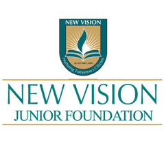

Education
National Institute of Technology Karnataka, Surathkal
B.Tech in Information Technology
CGPA : 8.72
NH 66, Srinivasnagar, Surathkal, Mangalore, Karnataka 575025
2019 - 2023

New Vision Juniour College
Higher Secondary Graduate
Percentage : 96.4%
Khammam Bypass Rd, Indira Nagar, Indira Nagar Colony, Khammam, Telangana 507002
2017 - 2019
New Vision the Olympiad School
Secondary Education
GPA : 9.8
Khammam Bypass Rd, Indira Nagar, Indira Nagar Colony, Khammam, Telangana 507002
Completed in 2017